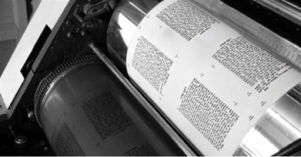

Printing the Tanya Adventures and Miracles
In the enemy’s lair, under the noses of the Iranian Revolutionary Guard, on the street in Arizona, closure in Sri Lanka – a compilation of stories about printing the Tanya all over the world, following the Rebbe’s instruction to print the Tanya wherever Jews are to be found. * Presented for Yud-Tes

CLOSURE IN SRI LANKA
Shliach to Sri Lanka, Mendy Crombie, relates:
After deciding to go on shlichus and open a Chabad house in Sri Lanka, we began preparing. One of the things we did was put an ad up in the Chabad shul in Tzfas asking people to donate s’farim for the Chabad house.
One of our friends, Dan Elstein, brought me a Tanya along with a special story. After seeing our ad, he began looking around at home to see if he had any s’farim he could donate. There was a small Tanya, but when his wife saw it, she said she had bought it on sale in New York and it had sentimental value to her. She did not want to part with it.
As they discussed it, he opened the book and to his great surprise, he saw that it had been published in Colombo, Sri Lanka! Then and there, his wife agreed to donate it to us.
To us, it was another sign that we were heading in the right direction.
• • •
Over a year went by and we had settled in Sri Lanka. The Chabad house was up and running. One Friday, when the phone rang, I answered it to hear someone say in Yiddish, “What’s a Jew doing in Sri Lanka?”
I was taken aback, but the man introduced himself as a Lubavitcher by the name of Fishel Katz of Florida. He said that he was in Sri Lanka on business and he asked if he could spend Shabbos with us. Of course we were happy to invite him.
When Fishel arrived, he asked whether I wanted to see something unique. When I said that I did, he took out a Tanya that was printed in Sri Lanka. I smiled and went over to the library where I showed him that I already had a volume of Tanya like that. He was very surprised and asked me where I got it from. I told him the story and then asked him where he had gotten his copy.
Fishel told me that when he was single, he had worked in diamonds for R’ Hirschel Chitrik of New York and did a lot of traveling. In those days, the Rebbe said the wellsprings of Chassidus should spread all over and he asked that the Tanya, the foundational text of Chassidus, be printed everywhere. Since then, the Tanya has been printed in over 5000 editions in places all over the world. Fishel had the Tanya printed wherever he went.
In 5743/1983, Fishel went on business to Thailand for a few months. During that time, he had to leave Thailand for Sri Lanka in order to extend his visa. As a Chassid, he called the Rebbe’s office in order to ask the Rebbe for a bracha for the trip. The secretary conveyed the Rebbe’s bracha and said that he should print the Tanya there. It didn’t help when Fishel said it would be a short trip and he wouldn’t have extra time, as the secretary said this was the Rebbe’s explicit instruction.
Fishel managed to set up the printing plates in Colombo, and took them in order to check them over before printing. When he returned to New York, he wrote to the Rebbe about the steps he had begun towards the printing of the Tanya, but afterward let the matter drop. Not long after, he received a response from the Rebbe in which the Rebbe asked how long it took for mail to get from New York to Sri Lanka. He figured that this question had to do with finalizing the printing of the Tanya.
He spent an entire night on the plates, fixing what needed to be corrected (all the numbers had been written from left to right), then submitted it to the Rebbe for approval and sent it by mail to the printer in Sri Lanka.
That is how the Tanya was printed in Sri Lanka.
• • •
A few years later, we found about seventy-five more Tanyas from that printing in the publisher’s warehouse in New York. Today, we have them and we give them as gifts to donors.
THE TANYA PRINTED IN PUSHKAR, INDIA
R’ Shneur Elias tells about a printing of the Tanya in India which nearly had to counter all the laws of nature:
The printing of the Tanya in Pushkar, India took many years. You are probably wondering why. A few years ago, when R’ Shimi Goldstein, the shliach in Pushkar, wanted to print the Tanya, he did not expect the unexpected in this third world country.
When he made an agreement with the Indian printer, it seemed as though all was well and they would be able to celebrate. On the appointed day, there was a festive atmosphere at the Chabad house and everybody was ready for the big event. However, the Indian printer did not show up nor did he answer the phone. When an Indian reassures you that something will be done, you have no idea whether it will or it won’t be done.
In Vattakanal, a picturesque town in southern India, the gashmius situation was very hard. When my friend Menachem Lenchner and I had arrived there, Arik Luzon was there and running the Chabad house. On Thursday, he and Menachem went out to do some shopping for Shabbos and I stayed at the Chabad house. Fifteen minutes later, they returned. When I pressed them to tell me what happened and why they had returned so quickly, Arik said they suddenly realized that they didn’t have enough money to go shopping.
Arik decided that in order to overcome our challenges and open up the “pipeline” of blessings, we had to print the Tanya. When I tried to think of who could help us with this project, I was reminded of a friend of ours who would be happy to get involved. We called R.S. and explained the situation. In the meantime, Arik borrowed some money and decided to make a start with the printing. He and Menachem looked all around the neighboring city for a place with a special printing press in order to produce the plates, but were unsuccessful. It was only in Kodaikanal, a six hour, winding, exhausting trip away, that they finally found a place like that. But even there, they were only able to print half the galleys and then they returned to Vattakanal.
On the winding roads leading to Vatta, they got a phone call about a donor who was donating $1000 to the Chabad house. Now there was money for food and to print the Tanya.
In order to do the actual printing, Menachem and Arik traveled to Madurai, and for twenty hours straight they supervised the printing which got stuck every so often. Each time, something else threatened to ruin their plan. Finally, those stubborn guys won and the Tanya was completed.
Menachem later moved on to Pushkar and when he heard about the printing that had gotten bogged down in the past, he got to work. A few days later, Indian workers came with a monster of a machine the size of a room. Together, they managed to get the machine into the Chabad house where the printing began with Menachem supervising. The job was completed two days later. The Pushkar edition of the Tanya was meant to be published in honor of 11 Nissan, the Rebbe’s birthday, but it was actually finished right before Pesach.
SAVED FROM DEATH THANKS TO THE PRINTING OF THE TANYA
R’ Yehuda Ezrachian relates:
It was about a year before the Iranian Revolution when the Rebbe initiated a secret rescue campaign to extricate Jewish children from Iran. Thanks to special emissaries to Iran, over 3000 children were taken out of the country. Even after the revolution began, many more children were secretly taken out with cooperation from the Jewish community.
About a year before the Iranian Revolution, two shluchim of the Rebbe went to Iran in order to print the Tanya there. It was decided to print enough copies so that every Jew in the community would receive one.
The Tanya was submitted for printing but the printing was delayed for a long time. In the meantime, the revolution took place and Khomeini rose to power. I was told to remove all the Tanyas from the publishing house and bring them to the community’s library. There, in the large hall, they were temporarily stored in disorderly piles.
The new government announced a law in which all Iranian citizens and public institutions had thirty days in which to get rid of all documents, papers and books that had the royal emblem, the name of the Shah, etc. on them. The law stated that anyone who had any document or book with one of these symbols on them after thirty days would be severely punished. If it was discovered that he had deliberately not destroyed them, he would be executed.
We were faced with a serious problem. We had archives over 100 years old and most of the documents and books bore the royal emblem as well as the name of the Shah. For example, we had many gold coins that the community had produced in honor of the king’s coronation and to celebrate 2500 years since the coronation of Koresh. On one side of the coin was a menora and on the other side was the royal emblem, Koresh, or a crown. From a moral perspective it was very hard for us to make peace with the purging and “cleansing” of an entire library and huge archive, but even when we were forced to accept this, we had no way of complying in such a short time.
At the end of the month, before we had managed to complete the job, the secretary came in and announced that two government supervisors had come and wanted to conduct a search in the offices to see if we had complied with the purging law.
I was terrified. I knew that I was finished and that the entire Jewish community was in danger. I said Vidui and Shma Yisroel. When they entered my room I nearly passed out. For some reason, for no logical reason, I had the idea of taking them to the library first.
What met their eyes were piles of books that were strewn all over. One of the supervisors bent over and took one of these books. It was a Tanya. He asked me what it was, and I told him about the Baal HaTanya, about the Chabad movement, about Rabbi Yisroel Baal Shem Tov and Chassidus. I said it was one of the foundational books of the movement.
He opened it and asked me to explain what it said on the page he had opened to. It was the first page of Shaar Ha’Yichud V’Ha’Emuna. I translated and explained the entire page. When I was done, he closed the book, kissed it, and said, “In a place that has books like these and someone in charge of a place like this, there is no need for additional inspections.”
We were stunned. When I recovered from the shock I said to him that before he left we would be so happy if he would sign our guest book. “On such-and-such a day, I visited the offices of the community, and inspected and ascertained that all was as it should be.”
The next Shabbos in shul, the entire community celebrated the miracle with me that took place in the merit of the Tanya.
RESCUE AT THE LAST MINUTE
The roads of Yangon, the capital of Myanmar (Burma) are familiar to R’ Dovid Hadad. For several years, he arranged minyanim on Rosh HaShana for the few Jewish families who live there. Since he had worked there in the past, R’ Yosef Kantor, shliach in Bangkok, asked him to print the Tanya there too. R’ Hadad wrote to the Rebbe asking for a bracha for success in this mission.
Thursday morning he arrived at the airport with the printing plates. He ordered a ticket and paid for it an hour before the flight.
At the counter on his way to the plane, he showed his passport to the clerk. The man looked at it, flipped through the pages and said, “You don’t have a visa. You cannot board the plane.”
R’ Hadad responded in surprise, “But it can be arranged now!” He was an experienced traveler who knew how things worked, but the clerk did not allow him to board the plane. R’ Hadad explained that he had already bought a ticket and it would be a big loss to him, but the clerk insisted he could not board.
Having no choice, R’ Hadad left the airport. It was only the next day, when he saw the news about the cyclone that had killed over 100,000 people that R’ Hadad realized what had happened. The city where he was going to do the printing had no power and thousands of bodies filled the streets.
The Tanya was later printed in Yangon after life had returned to normal.
THE KING’S MEN IN KINGMAN, ARIZONA
Late in the morning, a long commercial truck stopped in Kingman, Arizona. Passersby stared at the odd sight as the two back doors opened. The driver and his partner with their beards and hats were unfamiliar sights in those parts.
The two men, R’ Shneur Zalman Levertov, shliach in Phoenix, and his friend R’ Yosef Yitzchok Shemtov, also a shliach, took out a banner and spread it out. It said that in accordance with the Lubavitcher Rebbe’s instructions, a Tanya would be printed there. This was part of the campaign to print Tanyas wherever Jews could be found.
The printing press was set up, the printing plates were set up, and packages of paper were fed into the machine. Curious passersby who surrounded the vehicle heard a detailed explanation from the young rabbis about what they were doing. They told about the secret of this book and the tzaddik who urged them to print it. Some of the passersby identified themselves as Jews. They were asked to put on t’fillin and were given material to read about Judaism.
At a certain point, the crowd grew quite large. The shluchim took a batch of freshly printed sheets and began a short lesson in Tanya. Jews as well as non-Jews (l’havdil) listened to the message about man’s obligation to constantly strive for higher spiritual levels.
By the afternoon, the printing was almost done. The sun beat down and there weren’t many people on the street. An older man passed nearby. He caught sight of the sign and he slowed his pace. He was planning on continuing on his way when R’ Levertov asked him a question that was meant to delay him a bit. Something told him that it would be worthwhile engaging the man in conversation.
The man saw the pair of Chassidim and the look of surprise on his face surprised them too. He stared at them as he slowly answered the question, as though also trying to gain some time. He spoke with a foreign accent and the shluchim wondered where he was from. Finally, R’ Shemtov asked the man, who responded that he was from Germany.
A red light went off. They were not comfortable asking him directly whether he was Jewish. R’ Levertov finally asked, “Did you ever have a bar mitzva?”
Something in the man’s eyes changed. He came a little closer and said, “Yes, I am Jewish, if that is what you meant.”
It turned out that the man was a Holocaust survivor who was the only one of his family to survive. After the war, he immigrated to the United States and since then, he had not met any Jews of the type he had known before the war, the type he was looking at now.
He spent a long time telling his story and what the Germans had done to him and his family. The two Lubavitchers listened patiently.
The printing press had finished the job. The sun was about to set when the man rolled up his sleeve and put on t’fillin for the first time. When he was asked to repeat the verses of Shma, he burst into tears.
Before they parted, they gave him a copy of the Tanya translated into English as well as the phone number of R’ Levertov’s office. That was the beginning. The man spent Pesach with the shliach in Phoenix. Over time, he continued to advance in his Jewish observance.
PRINTING THE TANYA IN THE ENEMY’S OFFICE
In a high speed and top secret campaign, in primitive fashion but with modern tools, the Tanya was printed in Arafat’s office in Bethlehem. It was done by R’ Yosef Dov Cohen, a Lubavitcher Chassid from Beit Shemesh who was called up to the reserves during Operation Defensive Shield. In a diary he kept at the time, he wrote what happened:
The story began with my sudden drafting to Bethlehem. In my free time I was busy with Mivtza T’fillin and in giving out material to soldiers.
The idea of printing an edition of Tanya in the terrorists’ own territory was first posed by R’ Yedidya, one of the officers in my unit. R’ Yedidya is a mekurav of Chabad from Gush Katif. Seeing how the Rebbe’s mivtzaim are brought to the front lines, he jokingly commented that all we were missing was the printing of a Tanya.
To print a Tanya?! Here, in Bethlehem during battle?! That was a real challenge. It would definitely provide the Rebbe with nachas, but how could it be done? Where would we begin?
On first thought, it seemed like the wild imaginings of a Chabadnik in the reserves. However, the unit’s command post was based in Arafat’s compound in Bethlehem where there were also the offices of the Palestinian Authority and a nice hotel. In other words, the conditions were not bad but I still had no idea how to go about this.
On my first break, I asked for a laptop from my place of work. In a phone call with R’ Yossi Lipkin of the Chabad house in Kfar Saba, he told me that the Rebbe wanted the printing to be organized and official and that I had to ask permission from the one in charge before printing.
I spoke with R’ Manny Wolf of Kehos and with R’ Azar of Rechovos, who were enthusiastic about the idea. R’ Azar presented me with a Tanya printed on size A3 paper (closest European size to American 11”x17”) and suggested that I use a copy machine, but after further consideration the suggestion was deemed impractical.
I finally came up with the idea of using the Internet site otzar770.com run by Gidi Sharon. R’ Yoel Friedman, the one who ran it back then, promised his help. Yoel scanned the entire Tanya into 1020 picture files and even gave me special retrieval software that would help me with the printing. All the computer files were burned onto a CD and sent to me.
Computer? Check. The Tanya on disc? Check. The necessary programs? Check. The only thing missing was a printer to print the pages. It was almost Shabbos and I didn’t have a printer, and Sunday morning I had to report to army service. Once again, it seemed to me that the entire idea was farfetched. All my attempts to get a high-quality printer that could handle printing a thousand pages of Tanya failed.
Salvation came from an unexpected direction. The rav of our community in Beit Shemesh at the time, R’ Daniel Gravsky, who heard about the project, offered his personal laser printer.
Sunday morning, I packed my bags again; clothes and food, computer, printer and camera all went into the bag.
On the way to the Gilo junction, the unit’s chaplain, R’ Yossi Kossover, called and said that the chief military rabbi, R’ Yisroel Weiss, would soon be visiting Arafat’s compound. I was happy about this, because then he would also see the Tanya or even be there when it was printed. However, despite all the Hashgacha Pratis that I had seen until then, I was afraid that, for some reason, his visit would be canceled.
There were delays at Gilo junction and in Bethlehem there was a big demonstration of Christians from Europe together with Arabs, led by Achmad Tibi. All the roads were closed and I managed to get through with great difficulty.
I finally arrived at the compound in an armored personnel carrier and immediately began getting ready to print. I knew time was not on my side and at any moment we could be released (after a month in the reserves) or be ordered to evacuate the place.
On Sunday, 9 Iyar, on the official letterhead of the “Rais” (president in Arabic) inscribed in English and Arabic with the words “Palestinian Authority – President’s Office,” the first Tanya was printed in the office of Arafat (may his name be blotted out) in Bethlehem. It was a moving moment.
About two hours after the first copy was printed, R’ Yisroel Weiss arrived, accompanied by the chief rabbi of Central Command and an entourage of other senior rabbis. I hosted this honorable delegation.
The edition of Tanya that I printed was done nearly twenty years after the printing of the Tanya in the terrorist strongholds in Lebanon, and that was more than simply an unusual occurrence. After printing the Tanya in burning Lebanon, the Rebbe spoke about its importance at a farbrengen, saying, “People love excitement; there is proof that they are already in Beirut. On the table is a Tanya that was printed in Beirut (as it says on the frontispiece) a few days ago, so that there was time to bring it here in order that it would be on the table during the Yud-Beis/Yud-Gimmel Tammuz farbrengen. That they were able to print the Tanya in Beirut was because the IDF prepared the way and enabled it to happen.”
Menachem Ziegelboim. "Printing the Tanya Adventures and Miracles." Beis Moshiach, no. 858 (November 30, 2012).